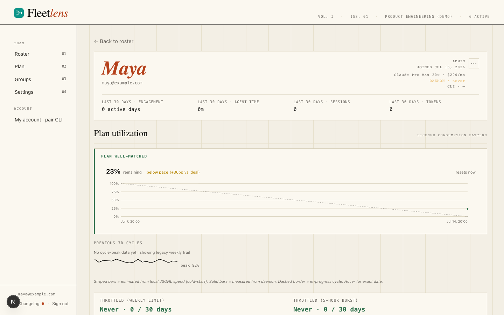
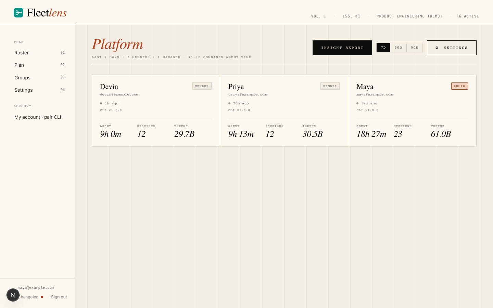
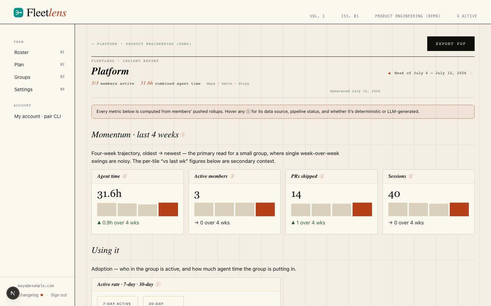
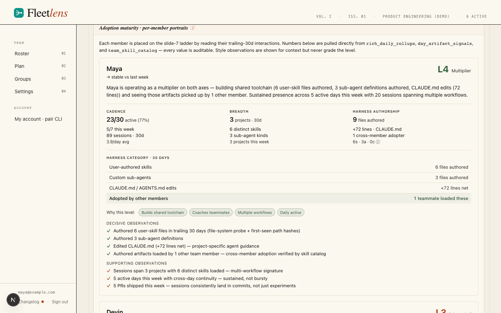
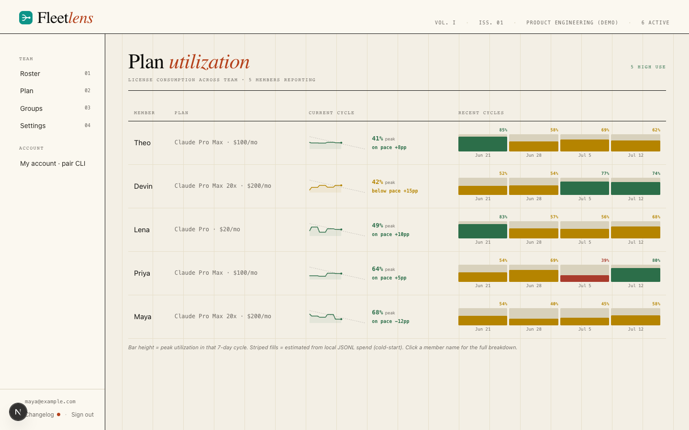

Deploy Team Edition and invite your first member.
Team Edition is the shared server layer for a Fleetlens team. It stores membership, selected rollups, usage history, integrations, and server-side reports. Raw session transcripts remain on each member machine.
Fleetlens including Team Edition is MIT-licensed open source — no license keys, no seat gating.
For a first team, use the repository's Railway template. It provisions the team server and Postgres with the main variables connected. Move to GCP, Docker Compose, or AWS Terraform when you need more infrastructure control.
What Team Edition adds
Roster and live activity
Admins can see the team roster, combined agent time, member activity, and current sync liveness across a selectable range.
How it works: the server joins each member's daily rollups and refreshes the roster as new pushes arrive.
Member profiles
Open a member profile for daily activity, sessions, tokens, plan fit, daemon freshness, and recent cycle history.
How it works: profile views read the member's stored rollups and usage snapshots, with role-based visibility for other members.
Groups and scoped views
Organize people into groups, assign managers, and give a group a focused activity and insights view.
How it works: group membership and visibility rules are stored in Postgres and applied before a team view is rendered.
Plan utilization
Compare member plan usage, current-cycle pace, recent cycle peaks, and possible unused capacity.
How it works: local usage snapshots are aggregated into server-side cycles and burndown signals for admins.
Group insight report
Every group gets an always-on momentum report: a four-week trend, an adoption maturity mix, per-member AI-adoption portraits, delivery metrics from any connected GitHub, Linear, or Jira, and a one-click PDF export. There is no setting to turn it on — it's there for any group with members, opened from the group page.
How it works: the server combines bounded rollups, usage history, and connected-integration data; it does not need raw member transcripts.
Project and issue context
Connect GitHub, Jira, and Linear at the team level, or let a group manager connect their own group's accounts directly, to add repository, ticket, and delivery context to shared views and the insight report.
How it works: each provider supports more than one simultaneous connection, and every connected source can be owned by the team or scoped to a single group.
Member-controlled scope
Each member decides which local projects are allowed to sync, so a team connection does not mean every repository is shared.
How it works: the local Team page stores the project selection and the sync worker filters before upload.
Admin controls
Create and revoke invite links, manage member access, promote trusted people to server-wide staff, and keep the server deployment current from an in-app updates screen.
How it works: server roles protect administrative actions and Postgres keeps membership, audit, and update state together.
How data moves
Team Edition begins with the Local Edition. Pairing creates an explicit outbound boundary; it does not turn the local dashboard into a remote transcript viewer.
Pair
The member signs up via invite (or self-serves from their Account page) and gets a server URL plus a one-time device token.
Select
The member chooses which projects this machine may share.
Derive
Local adapters and analytics prepare bounded rollups.
Send
The daemon uploads selected activity and usage data.
Share
Team views combine the received rollups in Postgres.
Choose a deployment path
Railway
Fastest path to a public HTTPS URL. The template provisions Team Edition and Postgres together. Open the Railway template and see the Railway guide for variables and one-click upgrades.
Google Cloud
Cloud Run, Cloud SQL, Secret Manager, and Cloud Scheduler. Follow the repository's GCP deployment guide.
Docker Compose
Run the server, Postgres, and Caddy on a host you control. Follow the Compose guide.
AWS Terraform
Use ECS Fargate, RDS Postgres, and an Application Load Balancer. Follow the AWS module guide.
Railway: the first deployment
Open the template
Sign in to Railway, open the Fleetlens template, and choose a Railway project and environment.
Wait for both services
Railway provisions fleetlens-team-server and Postgres. Wait until the server deployment is healthy and a public domain is available.
Open the generated URL
Open the generated *.up.railway.app URL in a browser and visit /signup. The server's BASE_URL must match the public URL used by the browser and CLI.
Create the first account
The first account becomes the administrator of the first team. Use a team-owned address and store the password in your normal password manager.
Check the server settings
Confirm the team name, public URL, database connection, and encryption key are stable before inviting members. Do not paste secrets into a ticket or chat channel.
Invite members and manage access
Admin-only settings live at your team's Settings page, organized into tabs: Profile, Members, Invites & sign-up, Integrations, and — for server staff only — Server. Anyone who isn't a team admin sees an "Admin only" notice instead of the tabs.
Profile
Rename the team from a single text field and a Save button. The team's URL slug is shown for reference but isn't editable here.
Members
A table lists every person on the team — name, email, role, and an active/revoked status badge — with a "Manage groups" link on each row that jumps to the group tools described in Groups. Two actions live here:
| Action | What happens |
|---|---|
| Revoke | Behind a confirm dialog, since it's immediate: the member's next sync or sign-in attempt fails right away. |
| Reactivate | Restores a revoked member's access. If their pairing needs a fresh device token, one is minted automatically and shown inline for you to hand back to them. |
Invites & sign-up
This is where you actually bring people onto the team — not by minting a device token yourself, but by creating a reusable invite link. A table lists every currently active link: the role it grants, which groups it auto-adds the new member to, who created it, its expiry, and how many people have redeemed it, with Copy link and Revoke actions on each row.
A "+ New link" button opens a form: pick the joining role, optionally choose one or more groups to place the invitee into, and set an expiry window (1–365 days, 90 by default). Choosing the admin role shows a warning, since anyone who redeems that link becomes a full team admin.
Below the link table, a sign-up policy control restricts which email domains can complete signup at all, whether they arrive through an invite link or public sign-up — enter a comma-separated list (for example demo-team.com, contractors.demo-team.com) and Save.
Integrations
Connect GitHub, Jira, and Linear for the whole team, or leave a provider to be connected per group instead — covered in Connected tools below.
Server (staff only)
If you're also server staff, this tab shows the same update-status panel described in Server administration, so you don't have to leave your team's settings to notice a pending update.
An invite link gets someone a team account. Pairing their local Fleetlens install is a separate, self-serve step each member does from their own Account page after they sign in — see Your account page. You never need to generate or hand out a device token on a member's behalf.
How members sign in and join
Once you've created an invite link (or turned on public sign-up), here is exactly what the person on the other end sees.
Signing in
Returning members open /login: an email and password field, a Sign in button, and a red error banner on a wrong password. When sign-up is open, a link below the form offers a way to create an account instead.
Joining with an invite link
Opening your invite link takes them straight to sign-up with the invitation already resolved: their email field is pre-filled and locked, a badge reading something like "INVITED · DEMO-TEAM" sits above the form, and the heading reads "Join demo-team" instead of a generic "Create your account." The submit button underneath still reads "Join team," not the team's own name. They only need to set a display name and password.
Public sign-up
If you've turned on public sign-up (Invites & sign-up tab, above), anyone can complete the standard form and press "Create account" without ever receiving a link from you — useful for an internal tool everyone in the company already trusts, less so for anything you want to gatekeep.
When sign-up is closed
Without an invite link, without public sign-up on, and after a first admin already exists, visiting /signup just shows a "Signup closed" heading and a "Sign in instead" button. This is the expected state for most teams most of the time — it's what stops a stray link to your server from creating accounts.
Right after creating an account
Whichever path got them there, the very next screen — shown once — is their own device-pairing command: a copyable fleetlens team join <server> <token> block with a "shown once" warning and a "Continue to dashboard" button. Tell new members to copy that command into a terminal before clicking Continue; the token isn't shown again, though they can always mint a new one later from their Account page. From here, send them to the member join guide to finish choosing which projects to sync.
Verify the first member sync
Send the member to Sync your first project. Their local onboarding flow, summarized here:
What happens
They review shared aggregates and the local-only boundary.
Choose
They select the projects this machine may send.
Start
They explicitly begin the history backfill.
Observe
The browser shows days pushed and retry states.
Review
The team dashboard receives derived rollups, not transcripts.
Ask the member to run fleetlens team status after the browser reports success. On the server, check the member's activity and the selected project rows.
The dashboard, roster, and member profiles
Every page under your team's URL shares the same chrome: a newspaper-styled masthead with an issue and volume counter and the current active-member count, and a left-hand navigation whose links change by role. Admins and staff see Roster, Plan, and Settings; a group manager who isn't an admin sees a link straight to their own group; every signed-in member sees a footer with their email, a link to the changelog (with an unread dot when a new release hasn't been seen yet), and Sign out. The changelog itself lists every team-server release, grouped by date, each entry tagged with Added/Fixed/Changed/Removed pills and a "latest" marker on the newest one; it renders bare for anonymous visitors and inside the full navigation shell once you're signed in, so a link to it is safe to share either way.
The roster
Admins and staff land on the roster: a grid of one card per active member, plus a range picker (7D/30D/90D) and a "Live · updates via SSE" indicator that means exactly what it says — the page refreshes itself the moment a member's daemon pushes a new sync, with nothing to click. A member who isn't an admin is redirected straight to their own group or their own profile instead of seeing the full roster.
Each roster card shows a name and email, chips for every group the person belongs to (a star marks one where they're the manager), a last-seen indicator, their local CLI version, a role badge, and a stat row of agent time, sessions, and tokens for the selected range. Click a card to open that member's profile.

Member profiles
A member profile (visible to the member themselves, their group's manager, and any admin or staff) opens with an identity header — role, join date, plan tier, daemon status, CLI version — followed by a 30-day summary and a daily activity chart with its own range toggle; a collapsible "Daily breakdown" table underneath gives the exact numbers behind the bars.
Below that sits a plan-fit block: a plain-language verdict (something like "on track," "consider upgrading," or "urgent — will run out early") for this one person, next to a burndown chart of their current cycle — actual usage against an ideal-pace diagonal, with a "now" marker and a pace label — and a strip of bars for their last several weekly cycles, colored by how much of that cycle they used.

Admins and staff get one more control here: a kebab menu with two actions. View logs opens that member's sync-log modal — a live, newest-first feed of their daemon's recent sync attempts paired with a daemon-liveness badge, so a silent log next to a stale heartbeat reads unambiguously as "the connection is broken" rather than "nothing happened." Request 30-day backfill queues a command that the member's own daemon picks up on its next check-in and re-pushes 30 days of activity — the fix for a gap or a wrong historical number that doesn't require a server upgrade, and safe to run more than once since it upserts rather than duplicates.
Your account page
Every signed-in member — not just admins — has their own Account page. It's the self-serve way to pair a machine: a "Generate device token" button that mints a one-time token and shows the exact fleetlens team join command with a Copy button. Generating a new token immediately revokes whichever one came before it, so re-pairing a lost or replaced machine is a single click here rather than a request to an admin.
Groups
Groups scope a project's people and their insight report together — for example, everyone on orbit-shop in one group and everyone on fleet-dashboard in another. Reached from Groups in the left nav.
The groups list
Admins and staff see every group: name, slug, member and manager counts, avatar stack, and Open / Settings links per row, plus a "+ Add new group" button. A manager who isn't an admin sees a shorter version scoped to just the group or groups they manage, each with a Settings link.
"+ Add new group" opens a compose modal: a name field (the URL slug follows it automatically), an embedded member picker for placing people into the group before it's created, and a Publish button. The member picker itself — a searchable checklist with per-row checkboxes, avatars, and a manager-role toggle, plus "Select shown" and "Clear" — is the same component used anywhere Fleetlens lets you add people to a group.
Group detail page
Opening a group (gated to its managers, admins, and staff) shows that group's own roster grid and summary stats with the same range picker used on the main roster, plus two buttons: Insight report, which opens the always-on momentum report described in The group insight report, and Settings.

Group settings
The Settings button (or a deep link straight to a specific tab) opens a modal with four tabs:
| Tab | What it's for |
|---|---|
| Members | Add members, promote or demote managers, and remove people — a remove needs a double-click to confirm. |
| Invite links | Self-serve invite-link generation scoped to this group; a link can also place the invitee into other groups at the same time. |
| Integrations | The group-scoped view of every source feeding this group's report — see Connected tools. |
| General | Rename the group's display name (its slug stays fixed since report URLs are built from it), and a danger-zone delete that detaches members from the group without revoking their team access. |
A group manager can also reach invite creation directly, without opening the modal, through a standalone invite page scoped to their group with the role locked to member — useful for sharing one link with a new hire rather than walking them through team settings.
Connected tools
GitHub, Linear, and Jira connections add delivery context — merged pull requests, ticket velocity, cycle time — to member views and to every group's insight report. Each provider supports more than one simultaneous connection, and every connection is either owned by the whole team or scoped to one group.
Team-level connections
From Settings › Integrations, an admin adds a GitHub connection with a fine-grained personal access token and a repository picker, a Linear connection with an API key and a team picker, or a Jira connection with a site, email, and token plus a project picker. Each connection gets its own status card, and a mapping table lets you route a specific repository, Linear team, or Jira project to a particular group instead of leaving it team-wide. "+ Add another GitHub" (and the equivalent for Linear and Jira) adds a second, third, or further connection — useful when different parts of the org use different GitHub orgs or Jira sites.
Group-scoped connections
Open a group's Settings › Integrations tab to see exactly what counts toward that group's numbers: every relevant source, whether team-owned or connected directly by this group, each with a badge showing which. A group manager doesn't need org-level integration access to help their own group — a "Connect GitHub for this group" (or Linear, or Jira) button lets them add their own credential (with a label so it's identifiable later) scoped to just their group, and for a team-owned source they can still opt individual repositories or projects in or out of their group's report without owning the connection at all.
Every connection card, team-level or group-scoped, offers the same three actions: Sync now for an immediate pull outside the normal schedule, Disconnect (behind a confirm dialog — this deletes the stored credential and strips already-synced data), and an inline reconnect form if a token or credential has expired.
The group insight report
Every group has a momentum report — a narrative-plus-numbers view of how that group works and how it's trending. It's always there once a group has members: no toggle, no preview mode, nothing to enable. Open it from a group's Insight report button; access is limited to that group's managers, team admins, and staff.

A header at the top carries the group name, the reporting week with Prev/Next arrows (bounded to weeks that actually have data), how many of the group's members were active that week against the total roster, combined agent hours, the roster's names, and when the report was generated. An Export PDF button sits next to it — see below.
Momentum: the four-week trend
The report leads with a four-week, oldest-to-newest trajectory rather than a single week-over-week number, because one week's swing is noisy for a small group. Four cards — agent time, active members, PRs shipped, and sessions — each show a small bar chart, a direction arrow, and the change from the trend, with an info badge next to every metric explaining exactly what it measures.
Using it
An active-rate tile shows what share of the group's seats did anything at all this week versus over the trailing month. Alongside it, a row of pulse tiles covers combined agent time, session count, and parallel-execution minutes — each with a week-over-week change — plus the week's single peak-concurrency figure and the date it happened.
Getting better
This is the qualitative core of the report. A maturity mix shows how many of the group's members currently sit at each of five adoption levels, L0 (Unaware) through L4 (Multiplier), as a stacked distribution bar with a table underneath naming each member's level and the evidence behind it.
Below that, a per-member adoption portrait: one card per person with a level badge, a trend arrow, and an AI-written summary paragraph placing them on the ladder from their last 30 days of activity, backed by a stat strip (how often they work, how broadly across projects, how much of their own harness authorship shows up), chips for which path qualified them for their level and any near-miss on the next one up, and evidence lists with small glyphs pointing at the specific sessions behind each claim — for example Maya's card might cite a Friday session in orbit-shop where she authored her own subagent. A working-style note may sit alongside — for context only, it never affects the level.

Three more tiles round this section out: adoption of Claude Code's plan mode (share of active members using it this week, plus a session-count delta), long-autonomous-turn texture (count and total minutes of long unattended runs, with the longest single run called out), and, when the group's members use named skills, a paired this-week-vs-last-week bar per skill.
Changing how we ship
A PRs-shipped tile always renders, straight from transcript data — total PRs and a per-active-engineer rate, both with a week-over-week delta — regardless of whether any integration is connected. Connect GitHub, Linear, or Jira for this group (see Connected tools) and three more views light up: a GitHub delivery block (merged PRs, the AI-assisted share measured by commit co-author trailers, and cycle-time and review-wait medians for AI-assisted work versus the rest), a Linear velocity block (tickets completed — for example ORB-142 — AI-linked share, cycle and lead time), and the same shape again for Jira. A work-timeline chart — once both GitHub and Linear tickets are mapped together — splits completed work into build and review phases, cohorted by how big the ticket was, so a small fix and a multi-day feature aren't averaged into one meaningless number. A per-project time chart closes the section: this week versus last week's agent hours per resolved repository (for example orbit-shop and fleet-dashboard), with an "others" row for agent time that isn't tied to any resolvable GitHub repo. Any block that needs a connection you haven't made yet explains what's missing and links straight to team settings instead of showing a blank chart.
Metric provenance
Nearly every metric heading in the report carries a small "i" badge. Hover or focus it and a popover explains what the metric measures, which data source it comes from, whether that source is currently connected and healthy, and whether the number is computed deterministically or written by the model — the report's main trust mechanism, so you're never guessing whether a figure is a hard count or an AI estimate.
A one-line banner at the top of the report reminds you these badges exist and that every metric traces back to a rollup your members' daemons actually pushed.
Seat right-sizing
Deliberately separate from the momentum and maturity content above, a seat right-sizing table is a pure cost lens: it flags members whose plan usage has stayed low long enough to be a downgrade candidate, with a summary line totaling the potential savings. It's one-directional by design — it only ever surfaces under-used seats, never flags someone for using their plan heavily.
Exporting a PDF
The Export PDF button on the report renders the exact week you're looking at into a downloadable, print-ready PDF — the server renders the same report headlessly and streams the file back, so what you export always matches what's on screen for that week. The underlying page it captures isn't browsable on its own; visiting it directly without a valid export link 404s even for an admin.
Plan and seat utilization
Where the group report's seat right-sizing table looks at one group, the Plan page (admin-only, from the left nav) looks at the whole team at once, with under-utilized seats surfaced first since they're the actionable ones. High use is treated as a good sign here, not a problem — it means someone is getting value out of their seat.

A badge count at the top splits the team into light-use and high-use seats. Below it, a table lists every member with their plan tier, a compact burndown chart for their current cycle, their peak usage percentage, a pace label, and a strip of recent cycle bars — the same shape as the burndown on a member's own profile, shrunk to fit a table row. A member who hasn't reported enough usage history yet shows a "collecting data" placeholder row instead of a misleading chart.
What Team Edition stores
| Area | Purpose |
|---|---|
| Membership | Teams, users, roles, device pairing, invitations, and audit activity. |
| Daily rollups | Agent time, session count, tools, turns, tokens, projects, and daily outcomes. |
| Rich rollups | Working-shape mix, skills, subagents, long turns, plans, tool errors, PRs, commits, and pushes. |
| Usage history | Plan windows, reset times, and snapshots reported by paired members. |
| Reports and integrations | Server-side team views and optional connected services. |
Server administration
Beyond team-level admin, Fleetlens has a separate, higher permission: staff, which administers the whole server rather than one team. Staff members get a /admin area, reached from a "SERVER ADMIN" badge and a "Back to team" link that returns to their own team; anyone who isn't staff is redirected straight to /login if they try to open it. Inside, three sections: Updates, Staff, and Logs.
Staff access
A table lists every user on the whole instance — email, name, join date, and whether they're staff — with a Promote or Revoke button per row and a "you" tag on your own row. You can't revoke your own staff access, and Fleetlens blocks revoking the very last remaining staff account entirely (the button is disabled with an explanatory hint), so the instance can never end up with nobody able to administer it.
Server logs
A live tail of the whole application's log — ingest, the scheduler, migrations, errors — with a search box, a level filter, a pause/live toggle, and auto-scroll that follows new lines until you scroll up yourself. It polls roughly every 2.5 seconds and caps at 5,000 lines. This is a different surface from fleetlens daemon logs on a member's own machine (covered in the operations guide) — that's one member's local sync history; this is the server's own application log, staff-only.
Server updates
A status panel shows the running version, whether a newer team-server image has been published, and when it last checked, with a manual Check now button outside the normal hourly poll. When an update is available, a banner appears with a Review link.
Review opens a per-version page with the changelog and every pending database migration's SQL shown up front, plus a note confirming the migration path doesn't drop data, before an Apply button commits it. This in-app review-and-apply flow is a second, separate upgrade path from redeploying a new image tag (described next) — use it on a deployment where you'd rather approve an update from the browser than touch your infrastructure's own deploy pipeline. The same panel also appears inside team Settings for any admin who is also staff, so it's hard to miss.
Admin checklist
- Use a stable HTTPS URL and keep
BASE_URLaligned with it. - Back up Postgres and protect the server encryption key.
- Use least-privilege admin accounts and revoke departed members.
- Document which projects are allowed to sync before inviting the team.
- Keep the team server and local member machines on supported Fleetlens versions.
Upgrades, migrations, and backups
This is the infrastructure-side upgrade path — redeploying a new image. If you'd rather approve an update from inside the app instead of touching your deploy pipeline, staff can use the in-app review-and-apply flow described in Server administration; both paths run the same migrations.
- Database migrations run automatically on boot on every deployment path — upgrading the image is the whole upgrade procedure; there is no separate migrate step.
- Pin a released image tag in production.
ghcr.io/cowcow02/fleetlens-team-server:latesttracks the development branch; released versions are published as:X.Y.Zfromserver-vX.Y.Ztags. - Back up two things: the Postgres database (regular
pg_dumpor your platform's automated backups) and theFLEETLENS_ENCRYPTION_KEYvalue. All team data restores from the database backup alone, but integration credentials (GitHub, Jira, Linear, email) are encrypted with the key — if the key is lost, reconnect the integrations after restore; nothing else is affected.
Developing and contributing
Team Edition is part of the open-source repository. To run the server locally, work on it, and author database migrations, start from the team-server development guide and the repository's contributing guide. Security reports go through private vulnerability reporting.
The repository is set up for AI-assisted development: committed skills and subagents encode the dev loop, migration rules, and release runbooks so a coding agent (Claude Code, Codex, or others) can continue building the product from its first session — see the contributing guide's "Contributing with AI agents" section.
Read the privacy model for the exact local/team boundary, or send a member to the join guide. Use the operations guide for logs, updates, and troubleshooting.